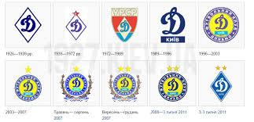
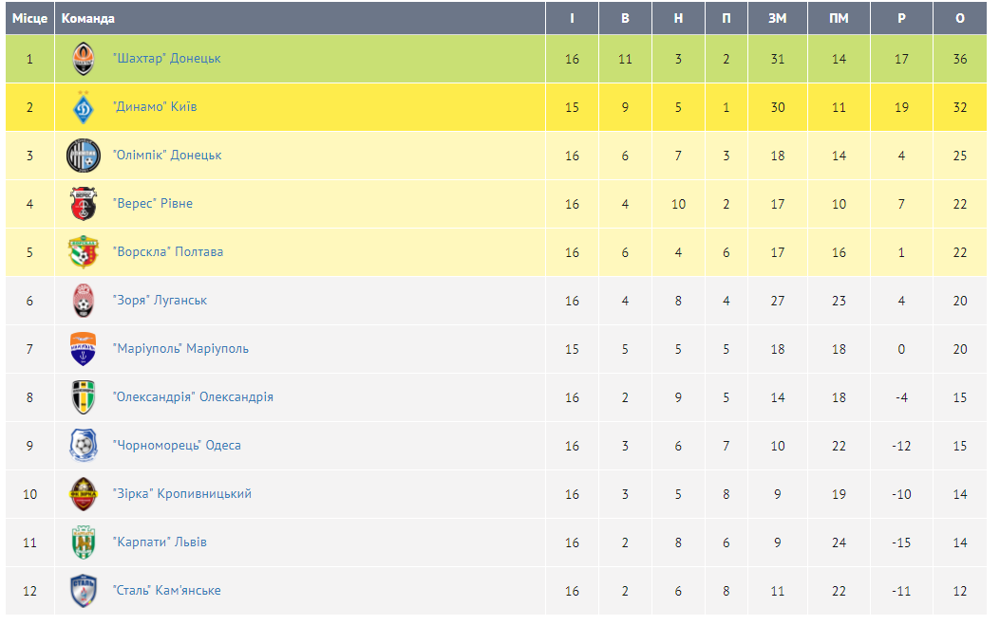

Трофеї

Найтитулованіша команда України, має в активі 15 чемпіонських титулів, 11 національних Кубків, 6 Суперкубків України, 1 Суперкубок УЄФА і два Кубки володарів кубків. Крім того, за радянський період історії «Динамо» завоювало 13 чемпіонських титулів, 9 Кубків СРСР, 3 Суперкубки СРСР, що робить «Динамо» найтитулованішою командою в історії радянського футболу. Перша немосковська команда, що здобула титул чемпіона СРСР, та перший представник Радянського Союзу, який завоював європейський трофей.

Також «Динамо» заняло 16 місце в списку найкращих європейських клубів 20-го століття за версією IFFHS, 8 місце в списку найкращих клубів світу 20-го століття за версією журналу Kicker та 17 місце в списку найлегендарніших клубів світу за версією журналу France Football. Найкращий клуб Східної Європи 20-го століття за версією France-Presse. За даними аналітичного агентства CK, за підсумками 2011 року «Динамо» було першим в Україні та 19-м у Європі футбольним клубом за кількістю реальних прихильників.
На головну